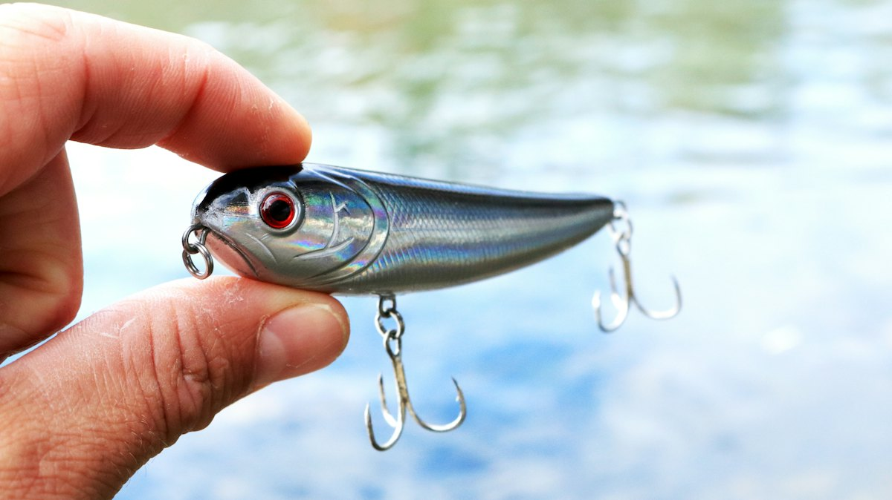
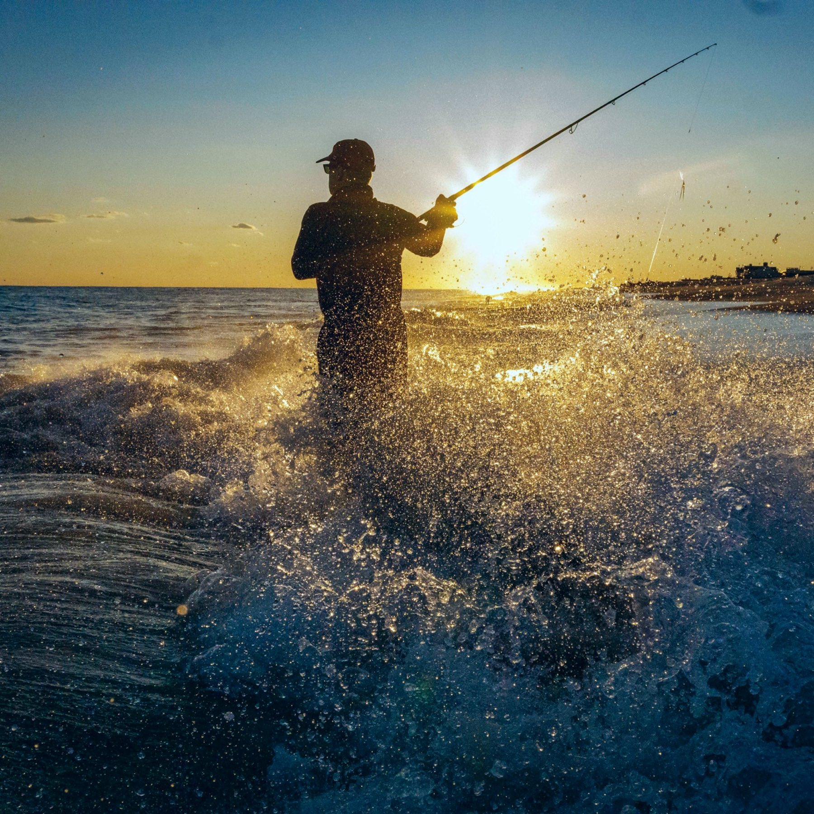
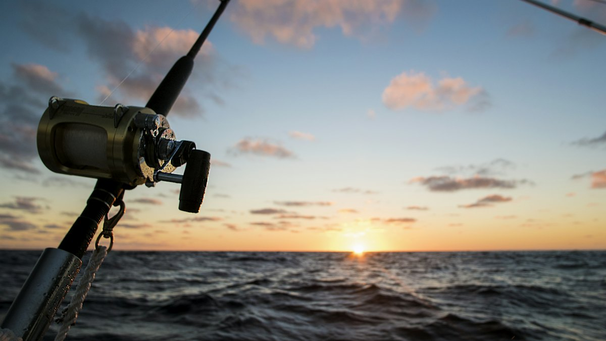
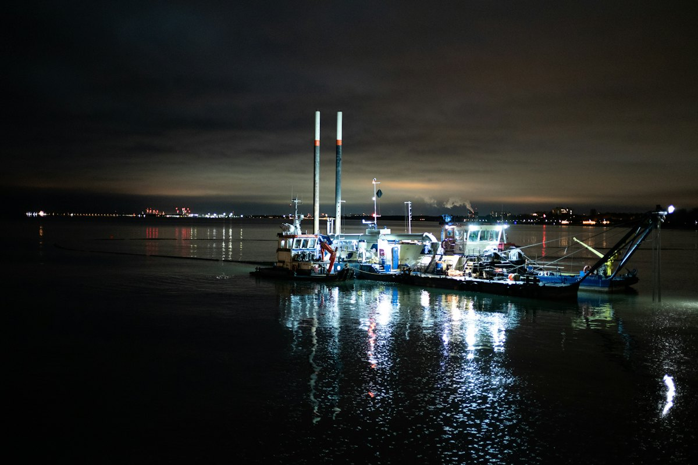
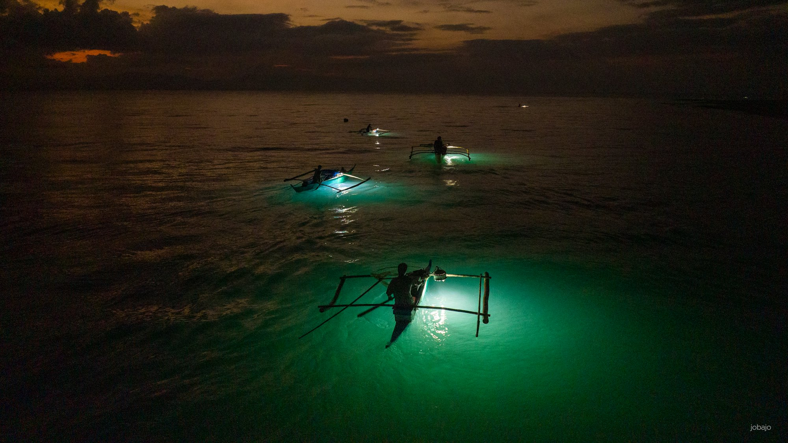

予約乗合船
毎日出船予定。1名様から。

ルアーシーバス専門の遊漁船 江戸川区・一之江
数少ない、オールシーズンのルアーシーバス専門の遊漁船です。予約乗合船は毎日出船予定。初心者の方でも大歓迎です。
ルアーシーバス専門の遊漁船 江戸川区・一之江
数少ない、オールシーズンのルアーシーバス専門の遊漁船です。予約乗合船は毎日出船予定。初心者の方でも大歓迎です。
ボイル
水面が、
沸く。
シーバスに追われた小魚が、水面で跳ねる。それが「ボイル」です。
水面をタップしてみてください。
夜の東京湾のイメージです
土・日・祝日は予約乗合便が出船しています。平日の予約乗合便も募集しています。その他の日程も、お気軽にお問い合わせください。
釣果は毎日更新。コノシロに追われた「ボイル」の様子や、73cmの極太、90cmのスパーランカーまで、船長が写真とともにお伝えしています。

毎日出船予定。1名様から。

時間帯は日程に合わせてご案内します。

お仲間との貸切も承ります。

燃料費高騰のため、一部の乗船料金が変更になる場合があります。料金は現在のホームページの表示をもとにしています。
| ご予約 | お電話・メールで（メールの予約もOK） |
|---|---|
| 出船 | 土・日・祝日は予約乗合便あり |
予約状況や釣果は、お気軽にお問い合わせください。